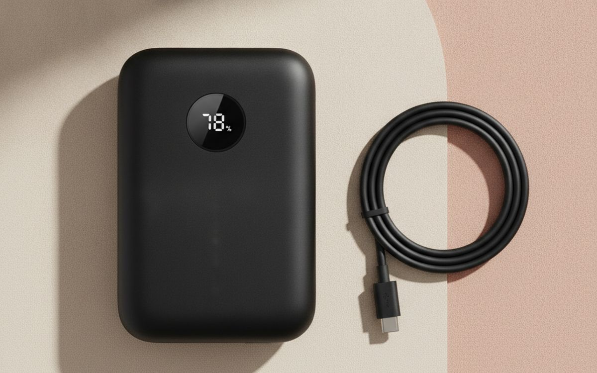
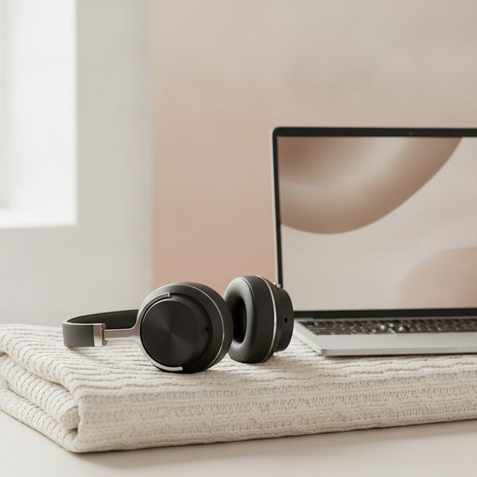
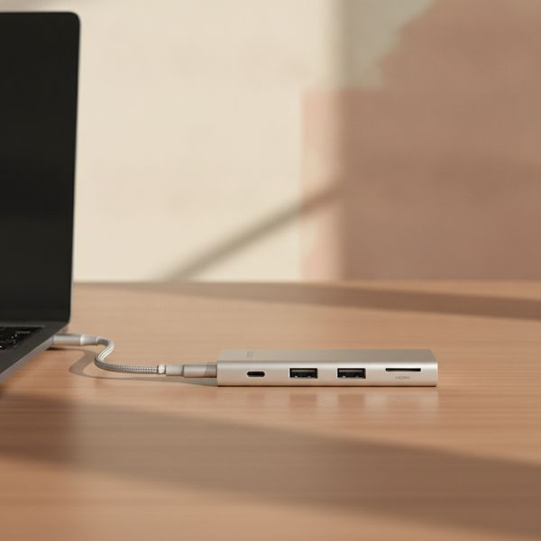
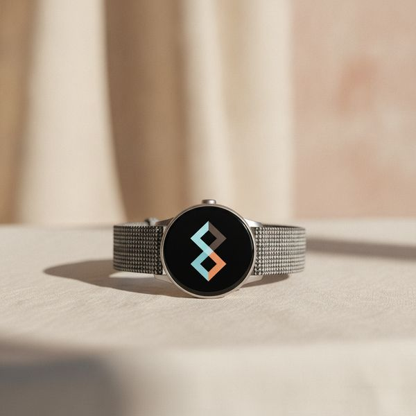
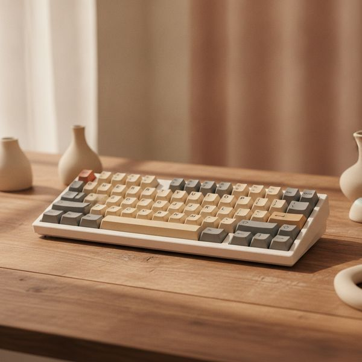
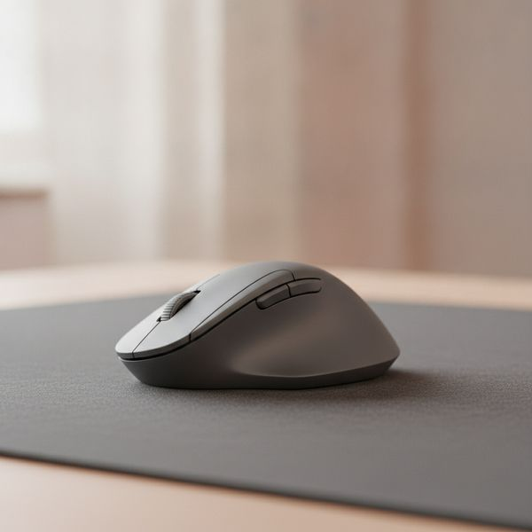
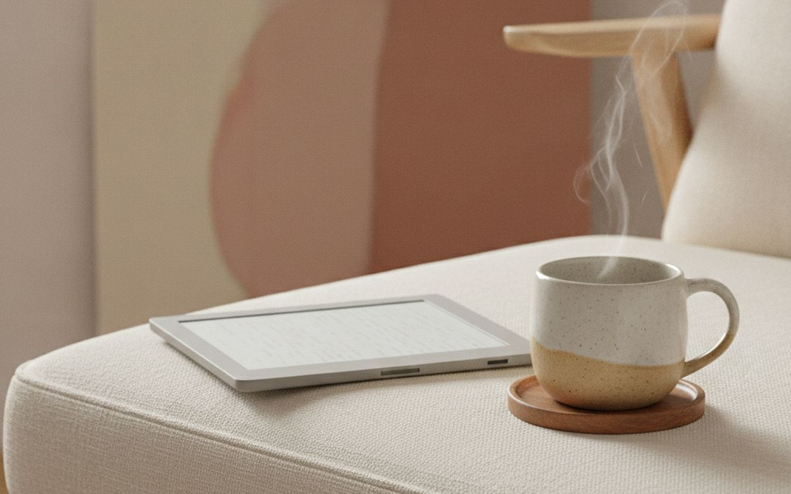
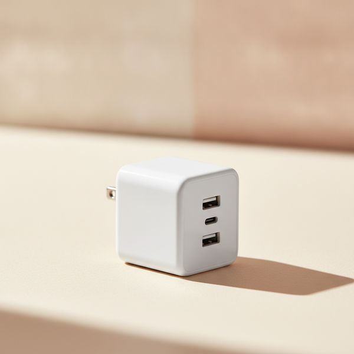
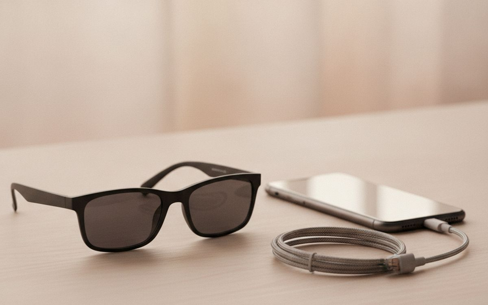
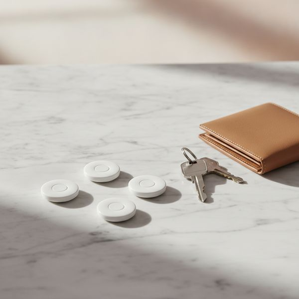

The gadget that gets recommended most is rarely the gadget that gets used most. Reviews are written in the first week, when everything is exciting and nothing has broken yet. What matters is whether the thing is still on your desk in March.
So the filter for this list was boring on purpose: does it solve a problem you actually have every day, and does it keep working. A few obvious categories are missing because nothing in them currently justifies the money, and we would rather leave a gap than pad the list.
Prices are approximate at the time of writing and swing hard during sale events. Use them for budgeting, then check the live listing.
The short version
Anker 737 Power Bank (24,000mAh, 140W)
Most useful thing here
Disclosure. The links on this page are affiliate links. If you buy through one we may earn a commission at no extra cost to you. It does not affect what makes this list or the order it is in.
How we picked
We weigh published measurement-based reviews, long-term owner reports and warranty and repair track records more heavily than launch-day coverage. We have not personally tested every item. Where one product clearly leads its category we name it; where the honest answer is that it depends on your phone, your ears or your desk, we tell you what the trade-off is instead of inventing a winner.
At a glance
Prices are approximate at the time of writing and change often.
The picks

01 · Most useful thing hereAnker 737 Power Bank (24,000mAh, 140W)
Most power banks are sold on capacity, which is the least interesting number. What matters is output: at 140W this one charges a laptop at close to full speed, not the trickle you get from a typical bank, so it genuinely replaces your charger on a trip rather than just delaying a dead battery. The small display showing real wattage and remaining charge sounds like a gimmick and turns out to be the feature you use most. It is heavy and it is not cheap, and if you only ever top up a phone you should buy something a third of the size for a quarter of the price.
$100–140Trade-off: Heavy — you feel it in a bag all day
Why it is here
- Charges a laptop at near-full speed
- Live wattage display is genuinely informative
- One brick covers phone, tablet and laptop
Worth knowing
- Heavy — you feel it in a bag all day
- Overkill and overpriced if you only charge a phone

02 · Best noise cancellingSony WH-1000XM6
Noise cancelling is the rare feature that changes how a space feels rather than just how it sounds. On a plane or in an open-plan office the effect is close to moving rooms. Sony's line has led this category for years on cancellation strength and on the software around it — multipoint pairing that actually works, and adaptive modes that duck the cancellation when you speak. The trade-off versus Bose is comfort: Sony sounds better and cancels marginally harder, Bose is easier to wear for six hours straight. If you wear glasses, try both before committing.
$350–430Trade-off: Expensive, and discounted rarely
Why it is here
- Class-leading cancellation
- Multipoint pairing that works reliably
- Long battery life with fast top-up
Worth knowing
- Expensive, and discounted rarely
- Less comfortable than Bose over very long sessions

03 · Fixes the modern laptopAnker 555 USB-C hub (8-in-1)
Laptops shed ports faster than we shed the accessories that need them, and a hub is the unglamorous fix. Look for three things: HDMI at 4K and 60Hz rather than 30, power delivery pass-through so the hub charges the laptop while it works, and an aluminium body, because plastic hubs run hot and throttle. This Anker has all three. The category is full of near-identical units from unfamiliar brands for half the price; those are usually fine until the day the HDMI output starts flickering, and you have no warranty to fall back on.
$50–75Trade-off: Cheaper clones look identical on paper
Why it is here
- 4K60 HDMI, not the common 4K30
- Passes power through to the laptop
- Aluminium body stays cool under load
Worth knowing
- Cheaper clones look identical on paper
- Adds another thing to carry

04 · Best smartwatch valueApple Watch SE (3rd gen) or Galaxy Watch FE
The flagship watches add a brighter screen, deeper health sensors and a titanium case. The budget models keep the parts people actually use daily: notifications, workout tracking, sleep, and contactless payment. Unless you specifically need blood-oxygen or ECG readings, the gap is much smaller than the price difference suggests. The real constraint is ecosystem — an Apple Watch is useless with an Android phone and a Galaxy Watch loses most of its value away from a Samsung handset, so this decision was largely made for you when you bought your phone.
$220–280Trade-off: Locked to your phone's ecosystem
Why it is here
- Keeps the features people use daily
- Well under flagship pricing
- Good multi-year software support
Worth knowing
- Locked to your phone's ecosystem
- No ECG or advanced sensors

05 · Best keyboard upgradeKeychron K2 HE (or any hot-swappable board)
If you type for a living, the keyboard is the tool you touch more than any other, and a mechanical board is a real ergonomic and tactile upgrade over a laptop's flat travel. The specific feature to insist on is hot-swap sockets: they let you change the switches without soldering, which means one purchase can be made lighter, heavier, quieter or clickier later as you work out what you like. Buy quiet switches if you share a room or take calls — the stereotypical clatter is a choice, not a requirement, and it is the fastest way to annoy everyone near you.
$90–190Trade-off: Loud unless you choose quiet switches deliberately
Why it is here
- Hot-swap means one board can change over time
- Big comfort gain over laptop keyboards
- Wireless and wired on the same board
Worth knowing
- Loud unless you choose quiet switches deliberately
- Tall — you may need a wrist rest

06 · Best mouse for long daysLogitech MX Master 4
The MX Master line has been the default recommendation for desk work for years, and the reason is the shape rather than the sensor: it supports the hand rather than requiring you to grip it, which is what your wrist notices after eight hours. The horizontal scroll wheel is the feature you did not know you wanted until you edit a wide spreadsheet or a video timeline. It is a large mouse built for medium-to-large hands and a palm grip; if you have small hands or claw-grip, this specific model will fight you, and the smaller MX Anywhere is the better buy.
$95–120Trade-off: Too big for small hands or a claw grip
Why it is here
- Genuinely comfortable over full working days
- Horizontal scroll earns its keep
- Pairs with three machines and switches instantly
Worth knowing
- Too big for small hands or a claw grip
- Heavy for a portable setup

07 · Best single-purpose deviceKindle Paperwhite (2024 or later)
The argument for an e-reader is not that it does more than your phone — it is that it does dramatically less. No notifications, no browser, no app that wants your attention, just text on a screen you can read in direct sun and in the dark. Waterproofing matters more than the spec sheet suggests, because it turns the bath and the beach into reading places. Get the ad-free version; the discount for lock-screen ads is small and you will look at that screen thousands of times.
$145–180Trade-off: Locked to Amazon's store for the easiest experience
Why it is here
- Readable in direct sunlight
- Battery measured in weeks
- Waterproof, so it goes more places than a tablet
Worth knowing
- Locked to Amazon's store for the easiest experience
- Slow refresh makes it poor for anything but reading

08 · Best small upgradeAnker Nano 3-port 65W GaN charger
Gallium nitride made chargers roughly half the size at the same output, which is why the brick that came with your laptop now looks absurd. A single 65W GaN charger with three ports runs a laptop, a phone and earbuds from one wall socket, so travel means one plug and one spare cable rather than a bag of bricks. This is the cheapest item on the list and one of the two or three that changes daily friction the most, which is a fair definition of good value.
$35–50Trade-off: 65W is not enough for power-hungry gaming laptops
Why it is here
- Replaces three chargers with one
- Folding prongs, genuinely pocketable
- Cheap for how much friction it removes
Worth knowing
- 65W is not enough for power-hungry gaming laptops
- Shared wattage drops when all ports are in use

09 · Most interesting, most caveatedXreal Air 2 display glasses
These put a large virtual screen in front of you from a device the size of sunglasses, which is legitimately useful on a plane or in a hotel room where a monitor is impossible. Text is sharp enough for real work, and plugging into a laptop or phone over USB-C is genuinely plug-and-play. Now the caveats, because they are substantial: the field of view is narrower than the marketing images suggest, they press on the nose after an hour or two, and you look conspicuous wearing them in public. Buy if you travel constantly and work on the move. Otherwise a second monitor is a tenth of the price.
$350–450Trade-off: Narrow field of view versus the marketing
Why it is here
- A big screen anywhere, from a pocketable device
- Sharp enough for real text work
- Works over a single USB-C cable
Worth knowing
- Narrow field of view versus the marketing
- Uncomfortable after an hour or two

10 · Cheapest peace of mindTile or AirTag item trackers (4-pack)
A tracker in a bag, a wallet and a set of keys costs less than replacing any one of them once. The thing that makes these work is not the tracker but the network: every nearby phone in the ecosystem quietly reports a tag's location, so coverage in a city is close to total. That is also the reason to match your phone — AirTags are excellent on iPhone and largely pointless on Android, and Tile is the more platform-neutral choice. Worth knowing before you buy: these are designed to find your own things, and both companies now build in anti-stalking alerts that notify someone if an unknown tag travels with them.
$70–100Trade-off: Effectively tied to one phone ecosystem
Why it is here
- Finding network makes urban coverage near-total
- Replaceable battery lasts about a year
- Cheaper than replacing what you lose
Worth knowing
- Effectively tied to one phone ecosystem
- Useless in areas with few nearby phones
Common questions
Is it worth buying last year's flagship instead?
Usually yes, for phones, watches and headphones. Year-on-year gains in these categories are small, and last year's model typically sells for 25–40% less within a few months of a new launch.
Are the cheap unbranded versions of these actually bad?
For passive accessories like cables and stands, often they are fine. For anything with a battery or that delivers power, brand matters — that is where safety certification, thermal design and an honest warranty are worth paying for.
What should I buy first if I work from a laptop all day?
A hub and a proper charger, then an external keyboard and mouse. Those four change your posture and your daily friction more than any single expensive device on this list.
Do I need the newest USB-C cable too?
For charging, almost any modern cable works. For fast data or driving a monitor, cheap cables genuinely fail — check that the cable states its wattage and data speed rather than assuming.
Today's deals
See what is discounted right now.
Deals →← All guides
We are not an Amazon Associate and earn nothing from Amazon links today. As an AliExpress affiliate we earn from qualifying purchases. Prices and availability are accurate as of the date of publication and may change.